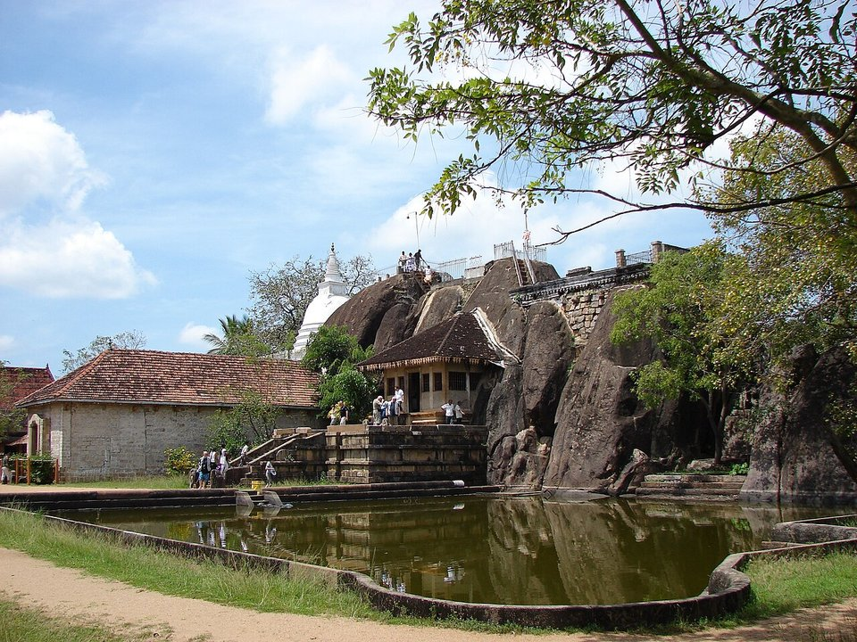
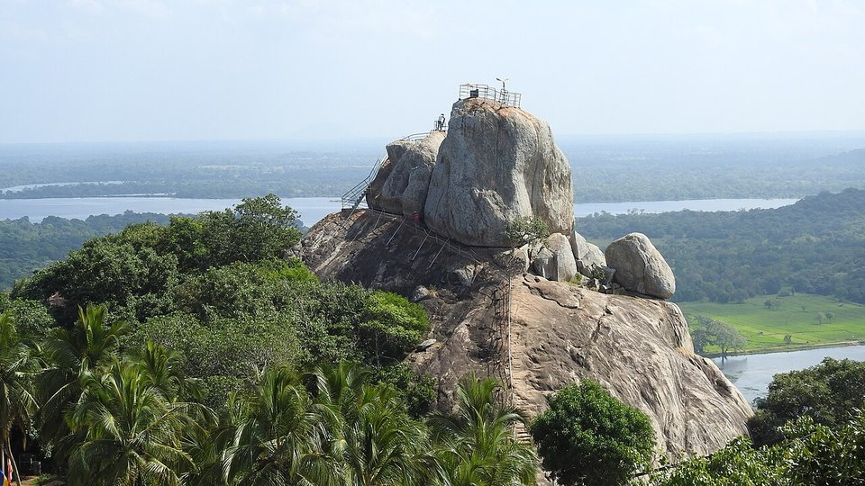

Destinations in Anuradhapura District
Click any destination to read in-depth visitor information, opening hours, transport advice, and photography tips.
 Ancient Cities
Ancient Cities
Anuradhapura Ancient Sacred City
The first capital of ancient Sri Lanka for over a millennium (377 BCE – 1017 CE), a UNESCO World Heritage expanse of colossal stupas, monastic universities, and royal reservoirs.
 Temples & Religious Sites
Temples & Religious Sites
Jaya Sri Maha Bodhi
The oldest living human-planted tree in the world with a documented planting date of 288 BCE, grown from a cutting of the sacred Bodhi tree in Bodh Gaya under which Buddha attained enlightenment.
 Ancient Cities
Ancient Cities
Ruwanwelisaya Great White Stupa
The dazzling white stupa built by King Dutugemunu in 140 BCE, standing 103 meters tall and surrounded by a monumental wall of 344 life-sized carved elephants.
 Ancient Cities
Ancient Cities
Jetavanaramaya Stupa
The world's tallest ancient brick monument, a staggering 122-meter stupa containing over 93 million baked clay bricks, built by King Mahasena in the 3rd century CE.
 Ancient Cities
Ancient Cities
Abhayagiri Monastery Complex & Moonstone
The sprawling 200-hectare ancient monastic university that sheltered 5,000 international monks, famous for the Samadhi Buddha and Sri Lanka's finest carved moonstone.

Ancient CitiesIsurumuniya Lovers Rock Temple
A charming 3rd-century BCE rock temple beside Tissa Wewa, famous for the world-renowned 'Isurumuniya Lovers' stone relief carving and royal elephant pool reliefs.

Ancient CitiesMihintale Sacred Mountain Peak
The cradle of Buddhism in Sri Lanka, an ancient sacred mountain where King Devanampiya Tissa met Arhant Mahinda in 247 BCE, reached via 1,840 stone steps.
 Ancient Cities
Ancient Cities
Twin Ponds (Kuttam Pokuna)
A masterwork of ancient Sinhalese hydraulic architecture, two exquisitely proportioned 8th-century stone bathing pools with underground water filtration systems.
 Forests & Nature Reserves
Forests & Nature Reserves
Ritigala Strict Nature Reserve & Monastery
A mysterious, mist-shrouded mountain rising 766 meters out of the dry plains, hiding a 1st-century BCE forest hermitage with raised stone bridges and medicinal forests.